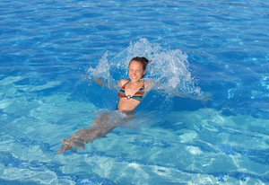

Ce site est consacré à la réalisation d'un jeu, ce qui va nécessiter :
Ceci dans le but d'acquérir des connaissances et de produire un résultat.
Il faudra bien sûr utiliser le HTML pour la rédaction des pages, mais aussi le CSS pour rendre la présentation plus agréable.
Le JavaScript est également utile pour rendre tout ça un peu plus animé.
Tout ceci peut être appris pas à pas avec les excellents tutoriels proposés par la fondation Mozilla par exemple.
Apprendre un langage de programmation comme Python par exemple permet de réaliser de vrais programmes adaptés aux besoins.
Il ne faut pas oublier de se former un peu au Graphisme et au Son car ce sont des choses qui seront utilisées dans la conception du jeu.
On trouve beaucoup de tutoriels pour apprendre tout ceci sur internet. L'apprentissage de la programmation sera le plus long mais la progression est visible et procure de la satisfaction.
La photo ci-dessus sert de test pour apprendre à insérer une image dans le site et à la centrer. L'original servira à travailler un peu le graphisme pour en faire peut-être une image de titre du jeu ou un logo pour le site.
CV
Liens d'aqui
Actualité du projet (son évolution) Quoi de neuf ? Où en est le projet ?
Gratuité des outils et de la diffusion
Musique genre Sampa